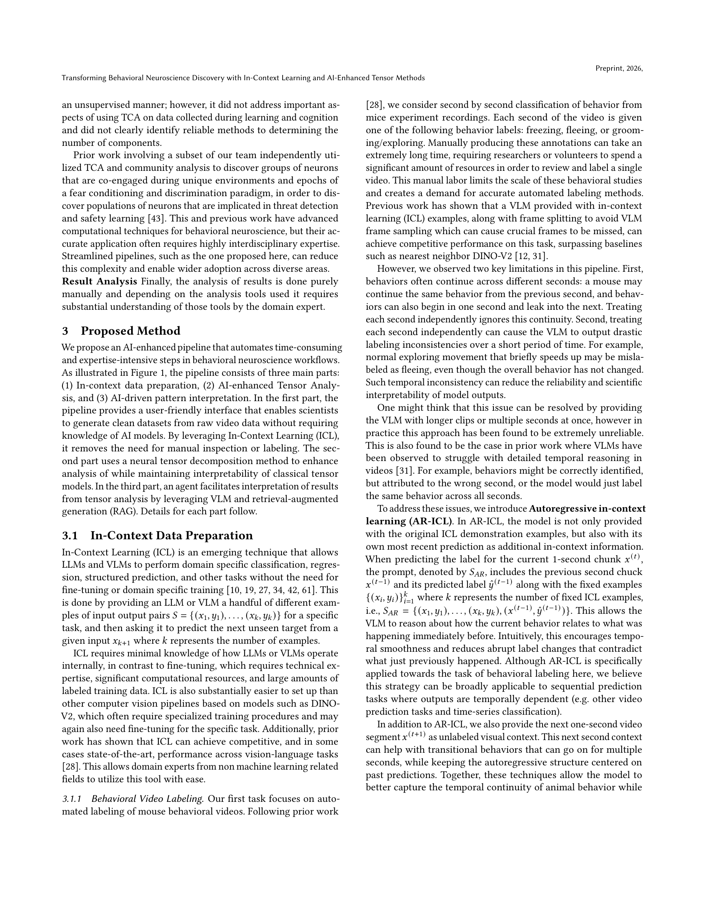

Figure 1
In-Context Learning(ICL)과 신경 텐서 분해를 결합한 end-to-end AI 파이프라인을 구축하여, 행동 신경과학의 공포 일반화(fear generalization) 연구에서 데이터 준비, 패턴 발견, 결과 해석을 자동화한 연구.
행동 신경과학의 연구 파이프라인은 수동 행동 라벨링, 복잡한 칼슘 이미징 처리, 전문 지식을 요구하는 텐서 분석 등 시간 소모적이고 경직된 과정으로 구성되어 있다. 도메인 전문가들이 프로그래밍이나 AI 모델 학습 전문 지식 없이도 최신 foundation model을 활용할 수 있는 인터페이스가 필요하다. 특히 PTSD와 관련된 공포 과잉 일반화(fear over-generalization) 메커니즘 이해는 임상적으로 중요한 문제이다.
파이프라인은 세 부분으로 구성:
ICL을 과학적 발견 파이프라인의 핵심 인터페이스로 활용하겠다는 비전은 매력적이며, 도메인 전문가의 AI 접근성을 높이는 실용적 방향성을 제시한다. AR-ICL은 개념적으로 단순하면서도 시간적 일관성 문제를 효과적으로 개선하는 기여가 있다. 그러나 각 구성 요소의 성능이 아직 실용적 수준에 미치지 못하며, 특히 rare event(fleeing) 감지와 칼슘 이미징 처리는 큰 개선이 필요하다. 전체적으로 "AI가 과학 파이프라인을 어떻게 변환할 수 있는가"에 대한 개념 증명(proof of concept)으로는 가치가 있으나, 개별 기술 기여의 깊이와 평가 규모 면에서 보완이 필요한 초기 단계의 연구이다.
| 항목 | 점수 (1-5) |
|---|---|
| Novelty | 3 |
| Technical Soundness | 3 |
| Significance | 3 |
| Overall | 3.0 |
총평: AR-ICL로 행동 신경과학 파이프라인을 AI화하는 개념은 유망하나 각 구성 요소 성능이 아직 실용 수준에 미치지 못하는 초기 연구다.